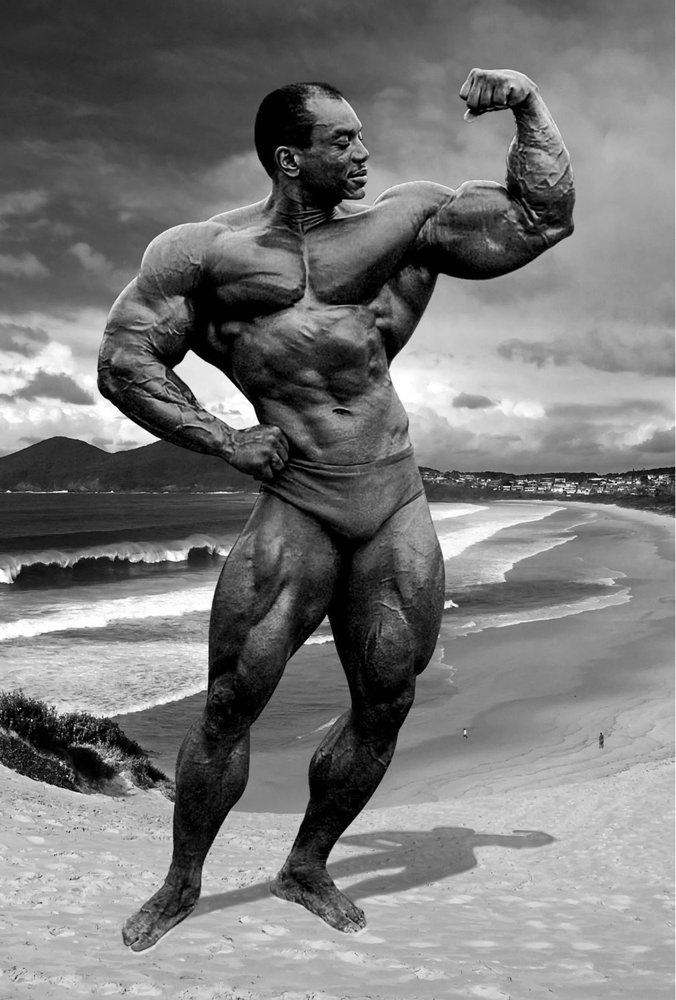

"The Myth" lakaplı Sergio Oliva, inanılmaz genetiği ve o döneme göre imkansız duran geniş omuz - ince bel oranıyla rakipsizdi. Arnold Schwarzenegger'i sahada yenebilen nadir efsanelerden biri olarak tarihe adını yazdırmıştır.